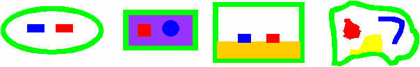

How to determine the physical dimensions of a directional coupler from its specifications of frequency and coupling factor
The program program design_coupler can generate a set of dimensions needed for making a directional coupler like that below

and end-view of which is shown here:

The width of the blue and red conductors (w) is computed as is the spacing between them s. The user can specify the height H of the enclosure and the length L of the coupler. If the height H is not specified, it defaults to 1.0. You can consider that 1", or 1 mm, it makes no difference, as only the ratio between all the sizes is important - not the absolutte values. has to perform three tasks to do this, all of which are fully automated, requiring only 3 arguments and a couple of options to do this.
design_coupler must first compute the required parameters (which are the even and odd-mode impedances Zodd and Zeven) for a directional coupler, such that it covers the frequency range of interest and has the required coupling factor at the centre of the band. For example, if you want to make a 20 dB directional coupler cover 144-146, design_coupler will first calcaulate the required values of Zodd and Zeven. These are printed, although you don't need to use them. By default the length of the directional coupler is assumed to be a quarter wave long, but this can easily be changed if it is an impractical length to use. A quarter wave gives maximum coupling, but it is always possible to use a shorter length, for which Zodd and Zeven will be different from those calculated for a quarter wave. In fact, the shorter yo make the coupler, there will be less the variation of coupling factor with freqnency. However, if the length L is made too short (say less than 10 x the height, fringing effect will be significant, which are not accounted for.design_coupler will next provide data on the coupling as a function of frequency. By default the coupling at 5 points between the maximum and minimum freqencies is displayed, but this can be changed at will by the -s command line parameter to design_coupler. The value at the centre of the chosen band will be correct, but at the endpionts it will not be. You may want to tweak the value you enter for the required coupling factor a little, so for example the coupling factor is a little higher in the centre of the band a little lower at the edges.- After you are satisfied with the directional couplers performance, you should re-run
design_coupler with the -c option. This will cause design_coupler to try to find the correct physical dimensions for a directional coupler shown below to meet the required specification. It will calculate H, s and s such that the impedances Zodd and Zeven match those required. The physical dimensions for this structure (and only this structure) can be computed with design_coupler. The reason this structure can only be used is that it is the only one for which an analytical solution is known. The analytical solution assumes that the thickness of the conductors is infinitely thin and the width of the enclosure W is infinite. In practice, W only has to be about 6*H+2*w+s to be acceptably wide.
|
There is nothing stopping anyone using any other design of directional coupler, like any of those shown below.
 |
However, design_coupler is unable to estimate the correct dimensions for such structures. The only way currently to do this with the atlc package is to do this is by trial and error with atlc, whereby one attempts to optimise the dimensions to arrive at the required values for Zodd and Zeven. In future, the aim is to extend this set of programs to find an automated way with any structure that is likely to be useful in practice, but so far this has not been implemented. When it is, it is likely to be very CPU intensive.
In order so show how to use design_directional coupler for determining the physical dimensions of directional coupler from its specifications of frequency and coupling factor , a number of example will be given.
It should be noted that if you run design_coupler with no arguments, or the wrong number of arguments or an invalid option, it will print a usage message. Hence the easiest way to see what options design_coupler takes is to run it with no arguments:
sparrow /export/home/davek/atlc/src/non_gui % design_coupler
Usage: design_coupler [-c] [-P] [-H height] [-L length] [-s fstep] [-z Zo] CF fmin fmax
where:
CF is the coupling factor required in dB [10 log(P1/P2)]
fmin is the minimum frequency (MHz)
fman is the maximum frequency (MHz)
Options are:
-c calculate physical dimensions (takes a while)
-P Print copyright, licencing and distribution information.
-H height to set the height of the enclosure (defaults to 1 unit)
-L length to set the coupler length (m). Defaults to lambda/4
-s fstep to set the analysis frequency in MHz step
-z Zo to set the impedance (default 50 Ohms)
coupled port 2 **** **** reflected port 3 * *
******************************************
******************************************
* *
input port 1 **** **** through port 4
<-----------------L---------------------->
Drive Port 1. The main power comes out from port 4.
A fraction of the forward power comes from port 2
A fraction of the reflected power comes from port 3
All ports must present an impedance Zo.
Note the diagram at the bottom showing the input port and the coupled port.
- Assume we wish to design a directional coupler for 140 to1350 MHz, with a coupling coefficient of 20 dB, so 10% of the forward power is coupled off to another port. First we run design_coupler like this:
sparrow /export/home/davek/atlc/src/non_gui % design_coupler 20 140 150
For a 20.000000 dB 50.000000 Ohm coupler with a length of 0.517241 m,
you need Zodd to be 47.559487 Ohms and Zeven to be 52.565748 Ohms
20.000 dB down <-- * * ---> 50.000000 Ohm termination
* *
*************************
**************************
* *
Drive this port --> * * ---> 50.000000 Ohm termination
<------ 0.5172414 m ---->
Drive Port 1, coupler out of port 2 and terminate the other ports in Zo
Such a coupler will have the response indicated below.
frequency = 140.000000 MHz coupling is -20.025496 dB down on the main arm
frequency = 142.500000 MHz coupling is -20.006372 dB down on the main arm
frequency = 145.000000 MHz coupling is -20.000000 dB down on the main arm
frequency = 147.500000 MHz coupling is -20.006372 dB down on the main arm
frequency = 150.000000 MHz coupling is -20.025496 dB down on the main arm
You may force the length to be any value you want using the -L option
You may try to find a coupler with these dimensions using the -c option
Currently the -c option is not that fast, as it uses a brain-dead algorithm
Note:
- The coupler has defaulted to being designed for 50 Ohms, but the value may be changed by use of the -z option.
- The required odd-mode impedance Zodd is printed (47.559487 Ohms)
- The required even-modem impedance Zeven is printed too (52.565748 Ohms
- The characteristic impedance of the coupler Zo =sqrt(Zodd*Zeven)
- That the length of the coupler has defaulted to 0.5717241 m, which is a quarter-wave at the centre frequnecy (145 MHz) of the band of interest.
- The coupling at the centre is what was wanted (20 dB) but it falls off very slightly at the ends of the band of interest (140-150 MHz). The coupler's length can be changed with the -L option.
t
You will probably want the coupler to be less than 0.5717241 mm (about 19"). You might have an enclosure that looks like the top diagram but is only 100 mm (about 4 inches) long. This time we will run design_coupler with the -L option to set the length to 0.1 m
Now lets try a similar coupler, but this time using a much wider bandwidth